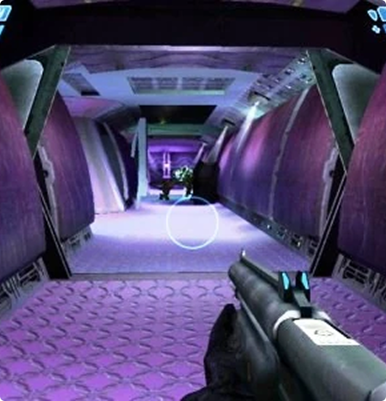
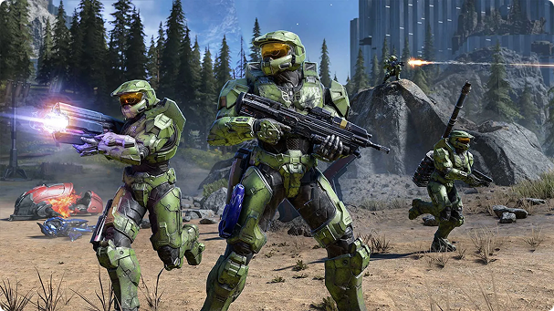
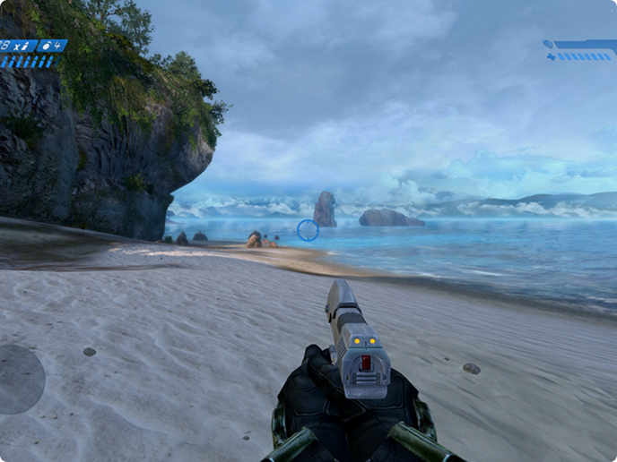

Halo en otros medios
Explora cómo el universo de Halo llegó más allá de los videojuegos, incluyendo libros, series y otros formatos.
Ver

Pocas franquicias pueden presumir de haber cambiado la forma en que una industria entera entiende su propio medio, pero Halo es una de ellas. Su impacto no se limita a las cifras de ventas ni al éxito de sus entregas: se extiende a la manera en que se diseñan los shooters, a cómo se construyen las comunidades en línea y a la identidad que una consola puede llegar a tener frente a sus competidoras.
Para entender su peso hay que volver al momento de su lanzamiento. A principios de los años 2000, el shooter en primera persona vivía sobre todo en el ordenador personal. Los juegos de consola intentaban imitar esa experiencia con controles incómodos, pantallas divididas y poca profundidad. Halo: Combat Evolved llegó para demostrar que un FPS podía funcionar con un mando, que la precisión no dependía del ratón y que una experiencia de campaña cinematográfica podía convivir con un sistema de combate ágil. Su diseño de dos armas a la vez, la regeneración de escudos que obligaba a buscar cobertura en lugar de depender de botiquines, y la variedad de enemigos con comportamientos distintos se convirtieron en una especie de manual implícito para generaciones de estudios. Muchos de esos principios siguen presentes en juegos actuales, a veces tan integrados en el género que ya casi no se perciben como innovaciones.


El otro gran aporte fue su relación con el juego en línea. Halo 2 llegó en un momento en que Xbox Live apenas empezaba a consolidarse, y su modo multijugador convirtió a la consola en un espacio social. Jugadores de distintos países se enfrentaban en partidas competitivas, creaban clanes, compartían clips y desarrollaban una cultura propia alrededor de la estadística, los rangos y los mapas. Esa experiencia ayudó a normalizar la idea de que un juego de consola podía tener una vida comunitaria tan intensa como la de los juegos de PC. Mucho de lo que hoy damos por sentado en el multijugador competitivo, desde los sistemas de emparejamiento hasta las temporadas de contenido y los modos de juego creados por la propia comunidad, tiene raíces visibles en la forma en que Halo se pensó y se mantuvo vivo.
La música y la estética también merecen atención. El tema principal compuesto por Martin O'Donnell se convirtió en un símbolo reconocible incluso para quienes nunca tomaron un mando, y su uso en eventos, tráilers y campañas de marketing demostró que una banda sonora de videojuego podía funcionar como una marca independiente. La armadura verde del Jefe Maestro, las siluetas de las naves Covenant y la arquitectura de los anillos construyeron un lenguaje visual que se reconoce a distancia. Esa coherencia artística ayudó a que la franquicia trascendiera el juego y llegara a novelas, cómics, animaciones y una serie de televisión, algo poco habitual para un título nacido en un entorno de nicho.

La saga también tuvo un papel importante en la relación entre plataformas y franquicias. Durante años, Halo fue casi sinónimo de Xbox, y su éxito ayudó a justificar inversiones en servicios en línea, en accesorios y en el ecosistema completo de la consola. Esa dependencia tuvo sus costos: cuando la marca se expande a otras plataformas o cambia de manos, los jugadores sienten que pierde parte de su identidad. Aun así, el caso de Halo muestra cómo una propiedad intelectual puede convertirse en el eje de una estrategia de largo plazo, capaz de sostener una consola durante generaciones.
Por último, Halo dejó una huella en la forma en que la industria piensa la continuidad de un proyecto. La transición de Bungie a 343 Industries, con todas las expectativas y debates que generó, planteó preguntas que siguen vigentes: ¿qué pasa con una franquicia cuando su creador original ya no está al frente?, ¿cómo se respeta la nostalgia de quienes crecieron con los juegos sin cerrar la puerta a nuevos públicos? Estas cuestiones no son exclusivas de Halo, pero la saga las vuelve especialmente visibles.
Explora cómo el universo de Halo llegó más allá de los videojuegos, incluyendo libros, series y otros formatos.
Ver
El contenido protegido por derechos de autor que pueda aparecer en este sitio, como imágenes, capturas de pantalla, ilustraciones, logotipos, fragmentos audiovisuales o referencias, se utiliza únicamente como material de apoyo, comentario, análisis, crítica, documentación o demostración de los temas tratados. La inclusión de estos materiales no pretende reclamar su propiedad ni transferir ningún derecho sobre ellos.